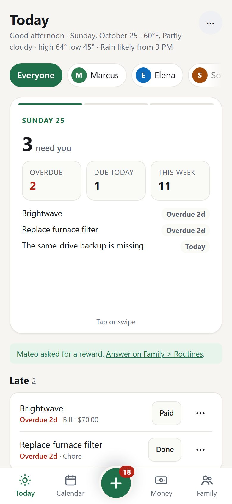
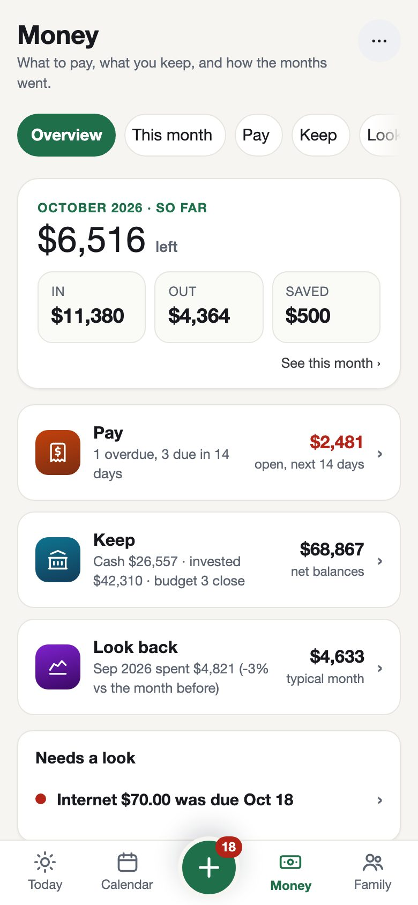
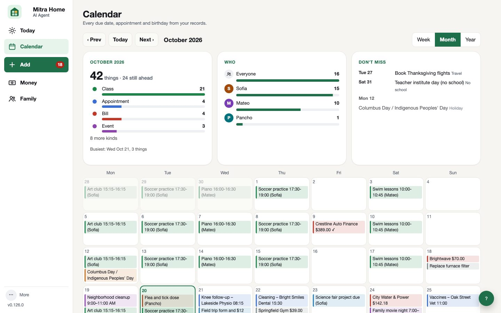
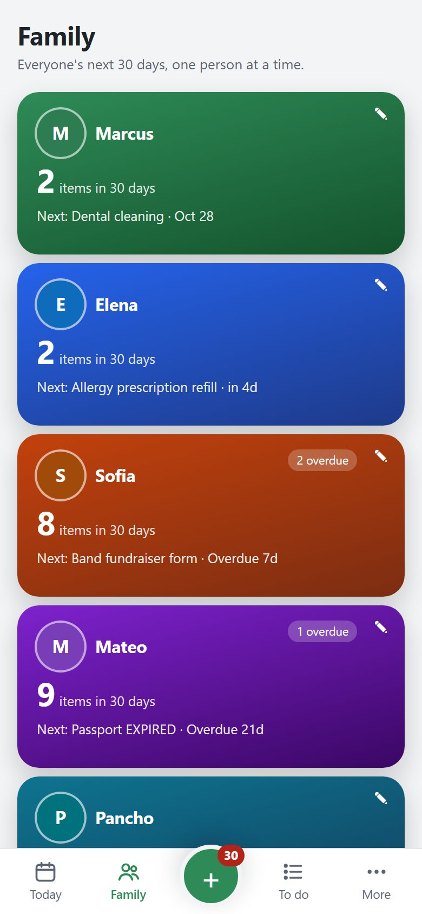
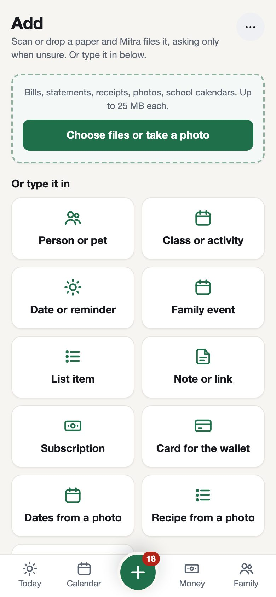
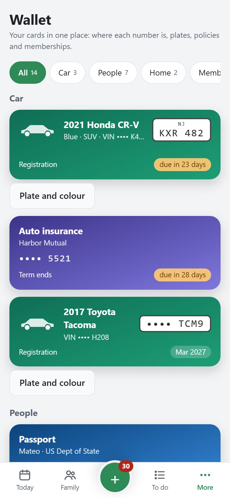
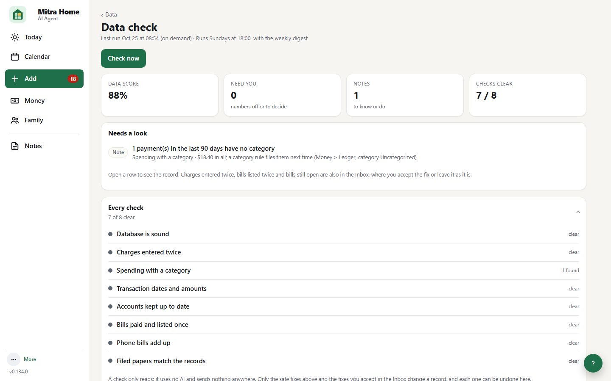

Mitra Home keeps track of bills, statements, insurance, school and doctor dates, birthdays and lists for the whole family. It runs on your own computer, so your papers never sit on someone else's server.
Download now (public beta, 0.130.3): Windows · Mac (Apple silicon) · Mac (Intel)
Drop in a bill or a statement. Mitra Home reads it, files it and reminds you before anything is due.
One list for the day: what is late, what is due today and this week, what is on the calendar and the money ahead. Tap Done or Paid right there, or snooze a row for a day, a week or a month.

Drop in your bank and card statements, or the download your bank offers. Money opens on four pages: Overview (the month so far), Spending (each category against last month and last year), Bills (what is paid and what has not come yet) and Regular (what keeps coming, a month and a year). Spending is counted one way everywhere: refunds come off, tax has its own line, and moving money between your own accounts or paying a card never counts.

Bills, appointments, classes, school closures, birthdays, renewals and holidays, all from your records. A family dinner from 8 to 8:30 sits at its time. Add your iCloud, Outlook or school calendar to see it alongside. Turn on online look-ups and Mitra Home finds this year's school calendar and adds your state's holidays.

Pair an old tablet or iPad and hang it in the kitchen. It shows the week and the month in everyone's colour, today's plan, what needs doing, dinner and the next three days. Children tick their jobs and earn stars. When nobody touches it, it rests on a big clock and the family's photos.
Passports that are about to expire, the dentist, the field-trip form, the dog's flea dose. Family opens with everyone's next 30 days, one search over every record and filed paper, and Needs a look; People, Home, Cars, Papers and the Wallet are one tap away. Children get their own simple page with their jobs, their items and the family lists, and never see money.

Drag bills, statements, receipts or a photo onto Add, or paste a screenshot. Each file shows its step while it is read and filed; the few that need you wait in plain groups, with a Why? that shows what was tried. Photograph a school letter and its dates are listed for you to tick; photograph a recipe card and it fills in the recipe.

IDs, the car with its plate, insurance, library and store cards, even the Wi-Fi name and trash day, as cards on the PC and the phone. Tap one to see where the number is printed on the real card. The parking meter asks for the plate? It is right there.

Every Sunday Mitra Home reads through the records for things that do not add up: a charge entered twice, a bill still open a month after it was due, a phone bill whose lines miss the total, a filed paper gone from the disk. What needs you lands on Add to accept or leave; every fix can be undone. With an AI helper set up, it says in plain words what to look at first.

Think of Mitra Home as a tidy family assistant who lives on the computer in your home.
Reading a messy bill is hard for a computer. Mitra Home can ask an AI helper of your choice (for example a Claude, ChatGPT or Gemini plan you already have, or a free model on your own PC) to read it. Before anything is sent, names and account numbers are hidden.
AI is optional. Common bank statement PDFs, bank CSV and OFX / QFX downloads and Verizon phone bills are read with no AI at all, and reminders, lists, calendar and backups all work without it.
Each adult gets their own PIN. Children and guests get their own simple page with their own items and family lists, and never see money.
Your PC is the hub. Everything in your home talks only to it over your own Wi-Fi; every outside service is optional, uses your own account, and is switched on by you.
We do not run a server that holds your data. There is no account to create with us.
Your own Claude, ChatGPT or Gemini plan or key. Or a local model, and then nothing leaves the PC.
Most families only need the Simple set. Advanced shows the extra tools for people who enjoy tinkering. Both are free.
The Simple / Advanced switch is in Settings > Household profile > How much to show. New installs start in Simple; installs that were already running keep seeing everything (Advanced). It only changes what is shown: nothing is deleted or switched off, and both views are free.
Yes. No subscription, no account. If you use an AI helper, you pay that provider directly under your own plan or key (often a few cents to a dollar a month for a family), or use a free local model.
A Windows PC or Mac that is usually switched on, about 15 minutes, and optionally an Android phone or iPhone. See Install.
Released under the GNU AGPL. You can ask for the source of any version on the Source code page, and it goes into a public repository once testing with our first families is complete, so anyone can check what it does with their data.
About 15 minutes on a Windows PC or Mac. Answer a few questions, drop in your first papers, and let it remind you from Monday.